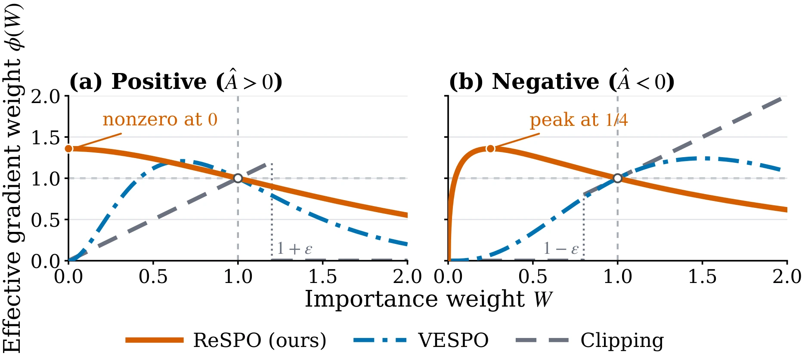
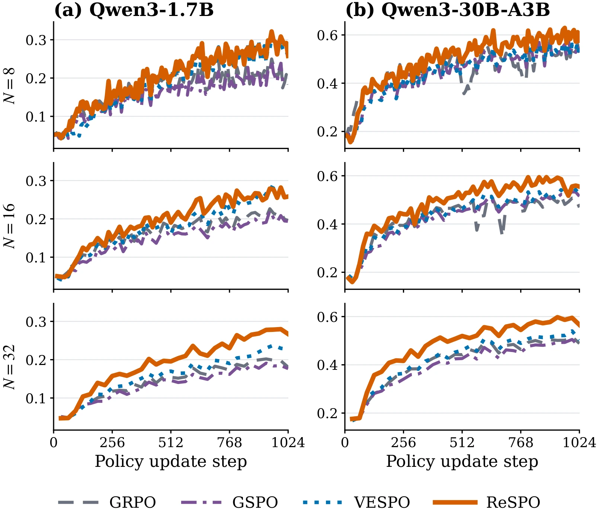

\(\hat{A} > 0\)
Positive response
Preserve signal when the response is becoming less likely.
Off-policy reinforcement learning
Gradient signal should follow what a response needs—not how stale it has become.
ReSPO reshapes sequence-level importance weights by advantage sign. It preserves learning signal for under-generated positive responses and suppresses severely over-generated negative responses.
Preserve signal when the response is becoming less likely.
Suppress both already-suppressed and over-generated tails.
\(W\) is the sequence likelihood ratio between the current and rollout policies.
00 / Abstract
Reusing rollouts across policy updates saves generation cost, but the current policy gradually diverges from the policy that produced the data. Standard clipped objectives then underweight positive responses that have become unlikely, while large-ratio negative responses can dominate an update.
ReSPO replaces clipping with a smooth, two-branch sequence-level kernel derived from an \(\alpha\)-divergence objective and an exponential variance-control tilt. The result is faster early optimization, stronger late-stage training scores, and higher held-out benchmark performance when rollout reuse is high.
01 / The idea
Positive and negative group-relative advantages need different behavior at the extremes of policy drift.
For \(\hat{A} > 0\) and \(W \to 0\), clipping makes the recovery signal vanish. A useful response that the current policy is forgetting receives almost no gradient.
For \(\hat{A} < 0\) and \(W \to \infty\), the unclipped gradient weight grows without bound. A negative response can overwhelm the rest of a reused rollout batch.
Required tail limits
02 / Method
ReSPO turns tail requirements into a smooth per-sequence gradient coefficient.

Interpret replacing \(W\) with \(\phi(W)\) as defining an unnormalized measure over responses.
Use an \(\alpha\)-divergence power mean, selecting \(\alpha\) by the sign of the group-relative advantage.
Project under a moment constraint to obtain an exponential factor that controls large weights.
\(\displaystyle \phi^{(+)}(W)=\frac{1+W}{2}\exp(1-W)\)
Maximum signal at \(W=0\); smooth decay as the response becomes over-generated.
\(\displaystyle \phi^{(-)}(W)=\sqrt{W}\exp\!\left(2(1-\sqrt{W})\right)\)
Zero weight at both extremes; value and slope match the positive branch at \(W=1\).
03 / Results
Experiments cover Qwen3-1.7B and Qwen3-30B-A3B, three rollout-reuse ratios, and six held-out math benchmarks.
\(+8.4\,\mathrm{pp}\)
Late-stage training score
Maximum gain over the strongest clipped baseline at \(N=32\).
\(\frac{5}{6}\)
Highest late score
Highest observed mean over the final 128 updates across model–reuse settings.
\(\frac{17}{24}\)
High-reuse benchmark wins
Highest observed value across model–benchmark comparisons at \(N=16\) and \(N=32\).
\(\frac{4}{4}\)
High-reuse evaluations
Highest benchmark average at \(N=16\) and \(N=32\) on both models.

Training-log summary
Figure 2 summaries from the paper. The early score is the maximum through policy update \(256\); the late score is the policy-step-weighted mean over updates \(896\text{--}1024\). Bold marks the largest observed value in each row.
| Model | \(N\) | GRPO | GSPO | VESPO | ReSPO |
|---|---|---|---|---|---|
| Qwen3-1.7B | \(8\) | \(0.169\) | \(0.158\) | \(0.161\) | \(0.192\) |
| \(16\) | \(0.156\) | \(0.127\) | \(0.151\) | \(0.166\) | |
| \(32\) | \(0.118\) | \(0.106\) | \(0.127\) | \(0.157\) | |
| Qwen3-30B-A3B | \(8\) | \(0.478\) | \(0.416\) | \(0.414\) | \(0.468\) |
| \(16\) | \(0.403\) | \(0.369\) | \(0.386\) | \(0.445\) | |
| \(32\) | \(0.362\) | \(0.341\) | \(0.364\) | \(0.418\) |
| Model | \(N\) | GRPO | GSPO | VESPO | ReSPO |
|---|---|---|---|---|---|
| Qwen3-1.7B | \(8\) | \(0.213\) | \(0.209\) | \(0.275\) | \(0.286\) |
| \(16\) | \(0.210\) | \(0.199\) | \(0.268\) | \(0.264\) | |
| \(32\) | \(0.197\) | \(0.184\) | \(0.230\) | \(0.276\) | |
| Qwen3-30B-A3B | \(8\) | \(0.530\) | \(0.538\) | \(0.538\) | \(0.595\) |
| \(16\) | \(0.498\) | \(0.521\) | \(0.531\) | \(0.563\) | |
| \(32\) | \(0.504\) | \(0.493\) | \(0.523\) | \(0.588\) |
Held-out evaluation
At \(N=8\), ReSPO remains close to the strongest macro average. At \(N=16\) and \(N=32\), ReSPO has the highest observed average on both model scales. Results are final-checkpoint pass@1 percentages; the final column is the six-benchmark macro mean.
| Model | Method | AIME25 | AIME24 | AMC23 | Olymp. | Minerva | MATH500 | Avg. |
|---|---|---|---|---|---|---|---|---|
| Qwen3-1.7B | GRPO | \(4.2\) | \(7.5\) | \(35.3\) | \(28.4\) | \(28.6\) | \(66.5\) | \(28.4\) |
| GSPO | \(6.2\) | \(7.7\) | \(40.2\) | \(30.4\) | \(27.2\) | \(65.8\) | \(29.6\) | |
| VESPO | \(7.3\) | \(12.7\) | \(47.8\) | \(38.8\) | \(30.7\) | \(74.2\) | \(35.3\) | |
| ReSPO | \(9.0\) | \(13.3\) | \(48.4\) | \(36.8\) | \(28.9\) | \(72.6\) | \(34.8\) | |
| Qwen3-30B-A3B | GRPO | \(15.2\) | \(24.8\) | \(73.8\) | \(51.1\) | \(43.6\) | \(85.2\) | \(49.0\) |
| GSPO | \(18.1\) | \(26.7\) | \(71.3\) | \(52.1\) | \(43.9\) | \(86.1\) | \(49.7\) | |
| VESPO | \(15.4\) | \(27.3\) | \(70.0\) | \(51.7\) | \(45.4\) | \(85.3\) | \(49.2\) | |
| ReSPO | \(25.2\) | \(30.6\) | \(79.1\) | \(42.7\) | \(41.1\) | \(78.3\) | \(49.5\) |
| Model | Method | AIME25 | AIME24 | AMC23 | Olymp. | Minerva | MATH500 | Avg. |
|---|---|---|---|---|---|---|---|---|
| Qwen3-1.7B | GRPO | \(7.1\) | \(8.3\) | \(43.1\) | \(30.3\) | \(27.8\) | \(66.3\) | \(30.5\) |
| GSPO | \(4.6\) | \(7.5\) | \(41.9\) | \(31.9\) | \(28.3\) | \(67.2\) | \(30.2\) | |
| VESPO | \(6.5\) | \(10.6\) | \(46.4\) | \(36.4\) | \(30.1\) | \(71.2\) | \(33.5\) | |
| ReSPO | \(9.4\) | \(12.3\) | \(46.7\) | \(35.8\) | \(29.9\) | \(71.7\) | \(34.3\) | |
| Qwen3-30B-A3B | GRPO | \(13.8\) | \(24.6\) | \(73.3\) | \(49.0\) | \(42.4\) | \(83.1\) | \(47.7\) |
| GSPO | \(15.6\) | \(26.5\) | \(70.0\) | \(49.3\) | \(45.2\) | \(84.8\) | \(48.6\) | |
| VESPO | \(15.2\) | \(30.0\) | \(70.0\) | \(51.5\) | \(43.6\) | \(85.4\) | \(49.3\) | |
| ReSPO | \(21.3\) | \(32.1\) | \(79.2\) | \(51.2\) | \(45.7\) | \(85.7\) | \(52.5\) |
| Model | Method | AIME25 | AIME24 | AMC23 | Olymp. | Minerva | MATH500 | Avg. |
|---|---|---|---|---|---|---|---|---|
| Qwen3-1.7B | GRPO | \(5.2\) | \(4.0\) | \(38.3\) | \(28.9\) | \(27.8\) | \(65.3\) | \(28.3\) |
| GSPO | \(4.6\) | \(5.4\) | \(38.1\) | \(29.9\) | \(29.9\) | \(66.3\) | \(29.0\) | |
| VESPO | \(8.1\) | \(13.1\) | \(45.6\) | \(34.1\) | \(28.2\) | \(69.8\) | \(33.2\) | |
| ReSPO | \(8.8\) | \(11.7\) | \(48.8\) | \(36.7\) | \(28.0\) | \(72.9\) | \(34.5\) | |
| Qwen3-30B-A3B | GRPO | \(12.3\) | \(31.3\) | \(71.7\) | \(50.3\) | \(44.4\) | \(85.0\) | \(49.2\) |
| GSPO | \(14.6\) | \(23.1\) | \(66.4\) | \(47.5\) | \(42.3\) | \(83.5\) | \(46.2\) | |
| VESPO | \(17.7\) | \(27.7\) | \(70.9\) | \(50.0\) | \(44.4\) | \(85.2\) | \(49.3\) | |
| ReSPO | \(20.2\) | \(26.9\) | \(79.5\) | \(51.0\) | \(45.1\) | \(84.4\) | \(51.2\) |
04 / Citation
Read the full derivation, implementation details, and complete evaluation protocol in the paper.
@misc{chen2026respo,
title = {ReSPO: Reshaped Sequence Policy Optimization
for Gradient Starvation in Off-Policy Learning},
author = {Chen, Yihang and Ban, Yuanhao and Hsieh, Cho-Jui},
year = {2026},
note = {Preprint}
}